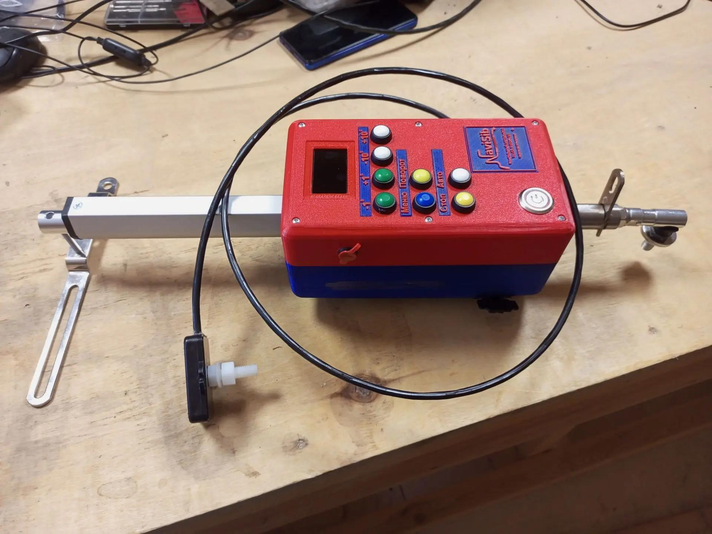
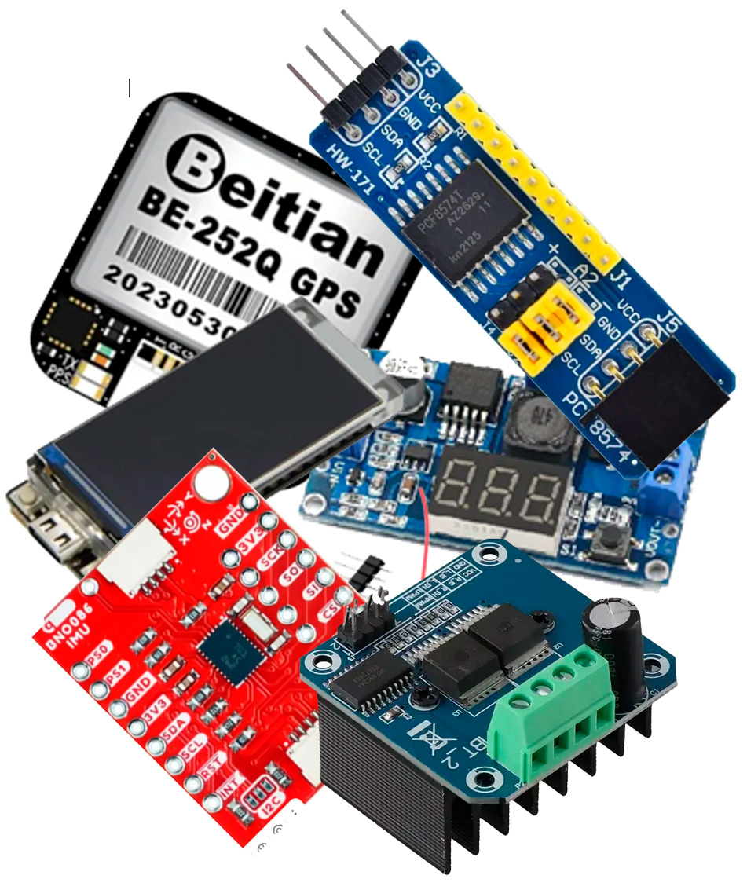
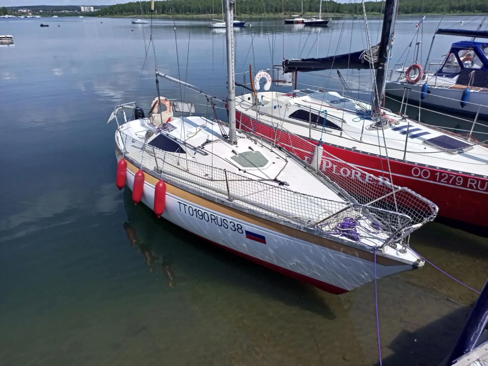
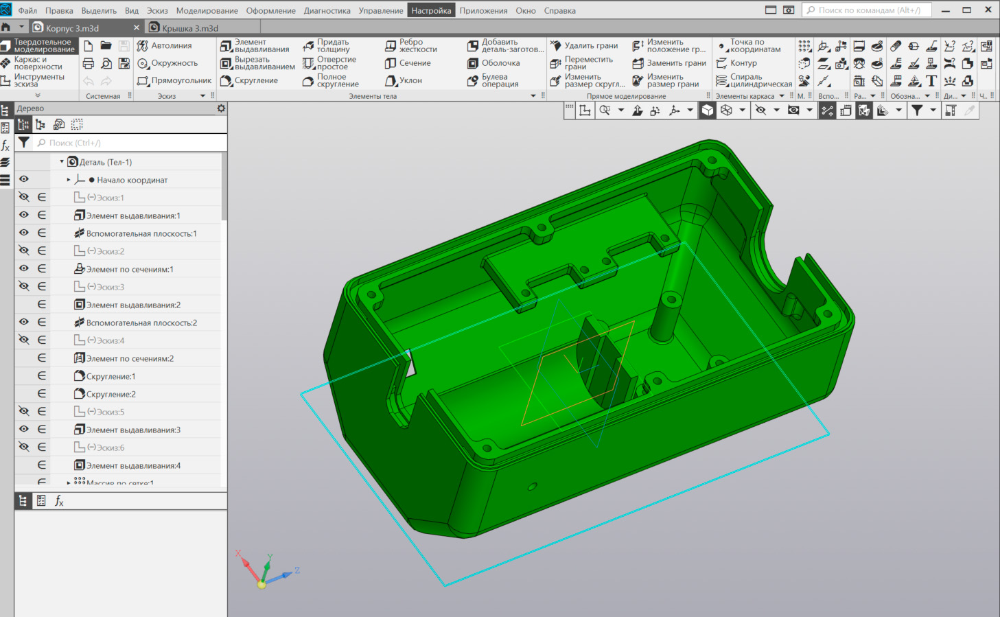
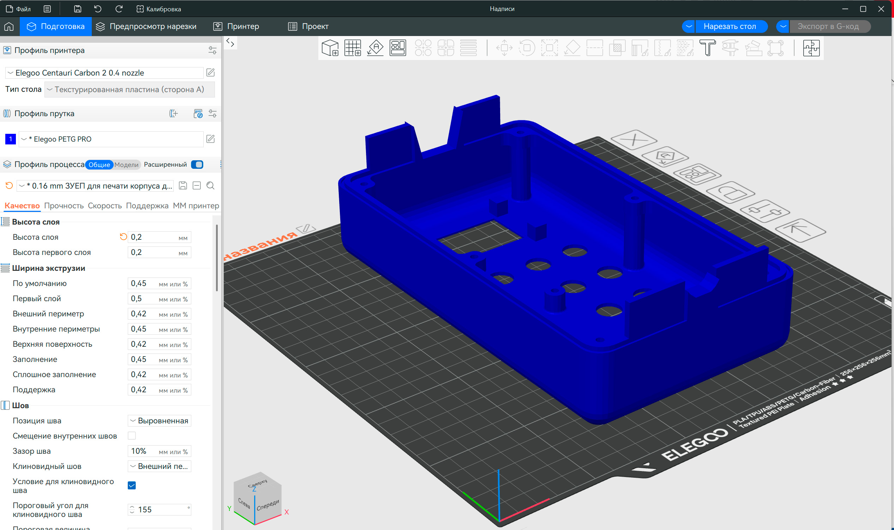

Галерея проекта
Комплекс NaviSib в деталях: от архитектуры мобильного приложения до ходовых испытаний на воде.






Программно-аппаратный комплекс NaviSib с нелинейной компенсацией динамического крена и дифферента. Полная независимость от импорта, обслуживание в РФ и поддержка штурвальных систем.
Мы развиваем потребительские стандарты, выводя их на новый уровень благодаря модульности, промышленной защите от помех и передовым математическим моделям.
Расчеты пространственного положения вынесены на интеллектуальный сопроцессор. Динамическая компенсация крена и дифферента работает аппаратно, снимая нагрузку с основного контроллера.
Прием данных от картплоттеров и эхолотов, а также полная интеграция с судовой сетью реализованы по протоколам Bluetooth и Wi-Fi. Никаких лишних проводов в кокпите.
Универсальная архитектура приводов. Поддержка классических румпельных систем, а также масштабируемость под штурвальное управление (колесные и линейные приводы).
Функции комплекса NaviSib разработаны с учетом реальных потребностей судоводителей парусных и моторных яхт.
Основная функция системы. Выведите судно на нужный курс и нажмите "АВТО". Автопилот немедленно активирует ПИД-регулятор и зафиксирует судно на заданном компасном курсе.
Незаменимо для парусных судов. Одно нажатие задает сторону — шток перекладывает руль на 100 градусов для создания импульса и сам фиксирует судно на новом галсе после прохождения линии ветра, позволяя капитану полностью сосредоточиться на работе со шкотами и управлении парусами во время маневра.
Мгновенный обход препятствия в любом режиме работы. Удерживайте кнопку направления для ручного поворота. При отпускании кнопки автопилот автоматически вернет судно на прежний курс (если был включен режим "АВТО").
Возможность управлять движением, используя приложение на смартфоне, располагаясь в любом месте на судне. Вы больше не привязаны к румпелю или штурвалу — контролируйте курс, пока настраиваете снасти или отдыхаете на носу.
Встроенный GPS-приемник непрерывно рассчитывает фактическую скорость движения судна относительно земли (SOG). Навигационные данные выводятся в приложении одновременно в узлах и км/ч.
Встроенный аппаратный сторожевой таймер (Watchdog) мгновенно обесточит мотор при любых сбоях. Быстросъемная П-образная чека позволяет одним рывком отсоединить привод от руля.
Комплекс NaviSib в деталях: от архитектуры мобильного приложения до ходовых испытаний на воде.





Чем архитектура NaviSib отличается от массовых коммерческих румпельных систем.
| Параметр | NaviSib | Массовый сегмент |
|---|---|---|
| Математика компаса | 3D-компенсация крена аппаратно | Программный расчет (склонность к дрейфу) |
| Поддерживаемые приводы | Румпельные и штурвальные системы | Только румпель (модели со штурвалом стоят в разы дороже) |
| Сервис и логистика | Сборка и обслуживание в РФ, быстрая доставка | Зависимость от параллельного импорта и дефицит деталей |
| Интерфейс и язык | Полная русская локализация, Android App (BLE / Wi-Fi) | Ограниченный кнопочный интерфейс (часто без русского языка) |
| Развитие функционала | Регулярные обновления прошивки с добавлением новых функций | Заводская прошивка без возможности апгрейда |
| Ремонтопригодность | Заменяемые узлы электроники | Плата залита компаундом (замена узла в сборе) |
| Ориентировочная стоимость | 60 000 ₽ | От 100 000 ₽ и выше (с учетом импорта) |
Заполните форму ниже — мы получим заявку мгновенно и свяжемся с вами для уточнения деталей и комплектации.
Или напишите нам напрямую в удобном мессенджере:
Данные обрабатываются в соответствии с 152-ФЗ на серверах Яндекса в России.
Скачайте последнюю версию приложения для управления по BLE/Wi-Fi и ознакомьтесь с технической документацией по монтажу.
Официальное мобильное приложение. Полный контроль автопилота, калибровка энкодеров и отображение компаса в реальном времени.
Подробная инструкция по монтажу приводного механизма, прокладке изолированной мачтовой проводки и пусконаладке системы.